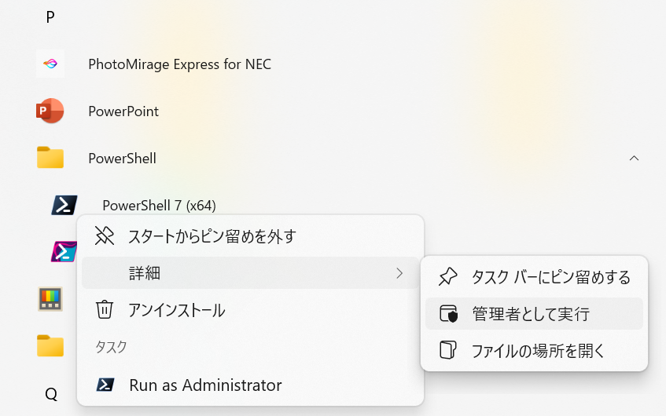
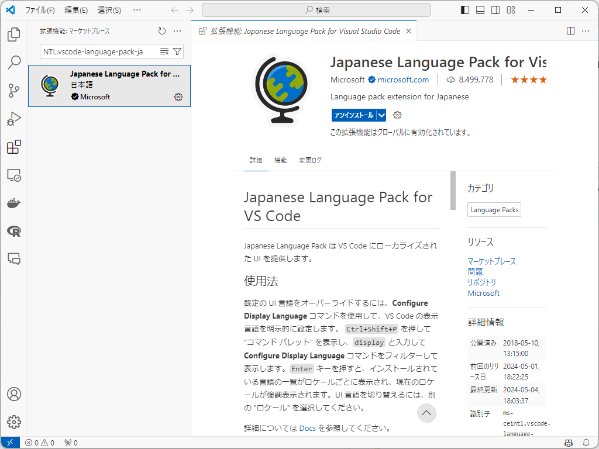
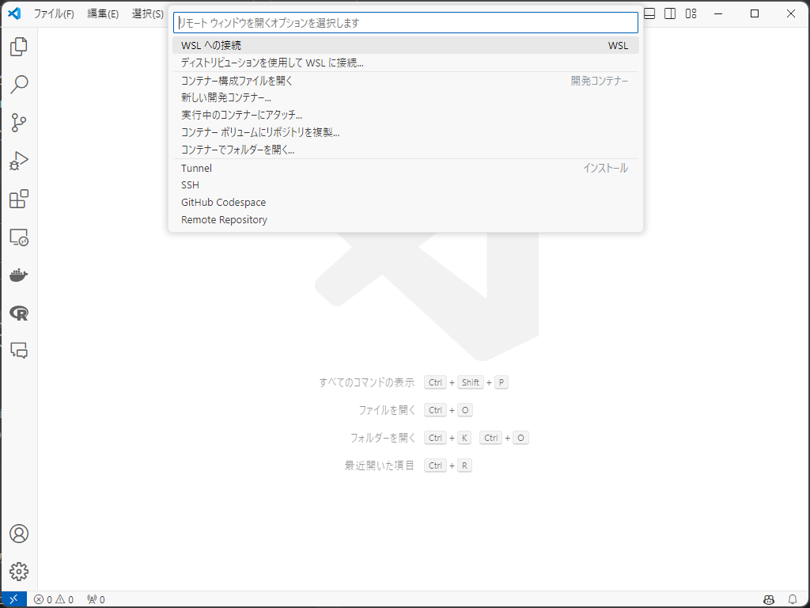
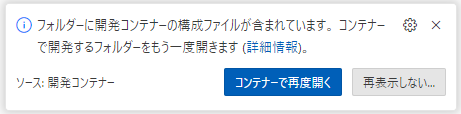

【Windows】開発コンテナを使って R 環境を構築！
ローカル環境から卒業！
はじめに
WSL2 と VSCode の開発コンテナを使って R の環境を構築する方法を説明します。
基本的な内容はこちらのページを参考にしており、個人的に使いやすいように修正を加えています。
開発コンテナを使うメリット等はそちらを参照してください。
また、最初は設定するのに結構時間がかかりますので、ご了承ください。
事前準備
まず、WSL2, Ubuntu, VSCode, Docker, Git, そして GitHub の準備をします。
ホスト側、共同作業者ともに事前準備が必要です。
WSL2
PowerShell または Windows コマンドプロンプトを管理者権限で開く
- 右クリックで管理者権限を使えます。

- 以下のコマンドを入力して実行
bash
wsl --installこれでインストールはできているはずですが、詳しくはこちらのサイトを参照してください。
Ubuntu
Microsoft Store を開く
「Ubuntu」と検索
インストール

ユーザー名とパスワードを設定
Ubuntu を開くと Linux ディストリビューションのユーザー名とパスワードの作成を求められます。
何でも大丈夫です。パスワードはめちゃくちゃ簡単で問題ありません。
エクスプローラーから Linux に入り、\Ubuntu\home\ユーザー名 がメインとなるディレクトリです。
VSCode
VSCode のダウンロードサイトからダウンロード、インストール
Download for Windows をクリックしてダウンロードできます。
インストールができたら、VSCode を開いてください。
（任意）日本語の拡張機能をインストール
画面左側に拡張機能のアイコン
 があります。ここの検索ボックスに
があります。ここの検索ボックスに MS-CEINTL.vscode-language-pack-jaと入力し、1番上に出てきたものをインストールします（単に Japanese でも出てきます）。インストール後、VSCode を再起動すれば日本語が反映されていると思います。

拡張機能のインストール
拡張機能の検索ボックスで、次の ID を入力し、インストールします。
ms-vscode-remote.remote-containers(Dev Containers)ms-vscode-remote.remote-wsl(WSL)
WSL に接続
VSCode から先ほどインストールした WSL に接続します。
画面左下の
><アイコンをクリックして、「WSL への接続」をクリックします。

Docker
Docker をインストールします。
ここから Docker Desktop for Windows をクリックしてダウンロード＆インストール
設定の確認
インストール出来たら、画面上部の設定ボタンから Resources、WSL integration と進み、チェックボックスにチェック、Ubuntu がオンになっていることを確認してください。
たまに、何もしていないのにここがオフになっていて、トラブることがあります。
詳しくはこちらをご覧ください。日本語で書いてあります。
画面左側の Volumes に進み、Create からボリュームを作成
次の5つを作成します（大文字小文字に注意！）。
fonts,julia,pip,renv,TinyTeX
Git
git のインストール
- Windows のアプリ一覧から Ubuntu を探し、開いてください。開いたら、以下のコマンドを入力して実行します。
Ubuntu
sudo apt-get install git
設定
- 以下のコマンドを入力、実行します。ユーザー名は何でも大丈夫です。
Ubuntu
git config --global user.name [任意のユーザ名]
git config --global user.email [任意のメールアドレス]GitHub アカウントの作成
ファイルは基本的に GitHub で管理するので、ここからアカウントを作成してください。
事前準備は以上です！
開発環境の構築
Docker を用いて環境を構築するにあたり、柳本和春さんのテンプレートをベースに作成しています。詳しくは柳本さんの 記事 をご覧ください。
主な変更点は以下の通りです。
RStudio の設定を追加（パネルの配置など）
それに伴う Dockerfile の加筆修正
日本語のロケール設定を追加
GitHub レポジトリを作成
GitHub を開き、右上の + ボタンから Import repository を選択
The URL for your source repository に、
https://github.com/yo5uke/template-R.gitと入力Repository name に任意のプロジェクト名を記入
Public を Private に変更
Begin import をクリック
テンプレートをクローン
GitHub 画面右上の自分のアイコンをクリックし、Your repositories を選択
一覧から、上で作ったレポジトリを選択
画面中央右にある
<> Codeから、.gitで終わる URL をコピーUbuntu を開き、以下のコマンドを入力して実行
Ubuntu
git clone [コピーした URL]エクスプローラーを開き、\\wsl.localhost\Ubuntu\home\ユーザー名 を確認してみてください。レポジトリ名と同じフォルダができていると思います。
VSCode で開く
VSCode を開く
上と同様にして「WSL への接続」を選択
画面左上の「ファイル」から「フォルダーを開く」をクリックし、作ったフォルダを選択
画面右下に「コンテナーで再度開く」と出たらクリック
出ない場合、画面左下「WSL: Ubuntu」をクリックし、「コンテナーで再度開く」を選択してください。
初めて環境を構築する場合、ここでかなり時間がかかるので辛抱強く待ちましょう。

RStudio で開く
ここで、ブラウザを用いて RStudio を開きます。
任意のブラウザで、アドレスバーに
localhost:8787と入力して開く右上の
![]() をクリックし、「New Project…」を選択
をクリックし、「New Project…」を選択「Existing Directory」を選択
「Browse…」より work を選択して Choose をクリック
- ここでプロジェクトが作成されます。
コンソールに以下を入力して実行
renvはパッケージを管理するためのパッケージです。Dockerfile でインストールすることを指示しているので、コンソールでインストールせずとも既に使用可能です1。
R
renv::init()DVC の設定
DVC はデータを管理するためのツールです。
事前準備として、自分の Google ドライブの任意の場所で、データを入れる用のフォルダを作成しておいてください。
また、共同プロジェクトの場合は、フォルダの共有も設定してください。
VSCode に戻る
画面上部「ターミナル」より「新しいターミナル」を選択
- 既に画面下部にターミナルが表示されている場合はスキップして大丈夫です。
以下のコマンドを入力して実行
- 初めに1回実行しておけば、それ以降は不要です。
bash
pip install dvc dvc-gdriveGoogle ドライブで作成したフォルダの ID をコピー
- ID は、ドライブでフォルダを開いたときの URL で、最後のスラッシュ（~/folders/）より右側の部分です。
次のコマンドを入力して実行
- 最後の部分をコピーした ID に変更してください。
bash
dvc init && dvc remote add -d myremote gdrive://<Google DriveのフォルダID>LaTeX の設定
R Markdown などで \(\LaTeX\) を使用するために、TinyTeXをインストールします。
RStudio のコンソールに以下のコマンドを入力して実行してください。
R
tinytex::install_tinytex(dir = "/home/rstudio/.TinyTeX", force = TRUE)TinyTeX は、\(\LaTeX\) コードをコンパイルする際に必要なパッケージを自動でダウンロードしてくれるので、ローカルに面倒な設定をしなくて良いのが魅力です。
R Markdown や Quarto での PDF 出力の仕方については、こちらの記事もご覧ください。
Julia の設定
参考記事の設定に基づき、Julia が使えるようになっているため、その始め方についても書いておきます。特に使う予定がなければ、スキップしてください。
VSCode に戻り、ワーキングディレクトリに
Project.tomlというファイルを作成キーボードで
Ctrl+Shift+Pを入力「Julia: Start REPL」を選択
ターミナルで、以下のコマンドを入力して実行
Julia
using Pkg
Pkg.activate()以上で Julia の事前準備ができました。
また、環境構築もここで一区切りです！
作業中
作業中のワークフローを説明します。
R のパッケージ
作業中新たにパッケージを使用した場合、それを renv.lock ファイルに記録することで、必要なパッケージを共同作業者と共有することができます。
バージョンごと記録できるので、全く同じ環境を再現することが可能です。
R のコンソールで以下を実行
renvがアクティベートされていない場合、アクティベートする必要がありますが、おそらく実行した際に「renv をアクティベートして lock ファイルに記録する」というような選択肢が提示されますので、それを選んでください。以下のコードでアクティベートすることも可能です。
R
renv::snapshot()R
renv::activate()（共同作業者）パッケージをインストール
使用したパッケージは
renv.lockに記録されているため、そこから（バージョンもホスト側に揃えて）インストールが可能です。バージョンの違いにより実行できないことを防げます。
以下のコードを実行してください。
R
renv::restore()これで R の開発環境をそろえることができます。
また、新しいパッケージを使ったら、その作業が終わるごとに記録し、共同作業者は renv::restore() でインストールしてください。
Python のパッケージ
設定では Python の設定も加えていますので、必要に応じて Python も使用できます。
また、そもそも DVC が Python のパッケージなので、それもここで記録します。
Python のパッケージを追加
先ほどと同様に、新しいターミナルを開いて、以下のコードでパッケージをインストールします。
DVC 以外特に使うものがなければ、ここはスキップしてください。
bash
pip install [パッケージ名]パッケージを記録
R と同様に、作業が終わったら以下のコードでパッケージを記録します。
特に何もインストールしていなくても、DVC を使っていますので、これは実行してください。
bash
pip freeze > requirements.txt（共同作業者）パッケージをインストール
- 共同作業者は、次のコードで Python パッケージをインストールします。
bash
pip install -r requirements.txtデータの管理
データは DVC で管理します。データは Google Drive 上で保管されます。
ワーキングディレクトリに、
dataというフォルダを作成データが入ったら、以下のコードを実行
dataフォルダごとドライブに追加します。
bash
dvc add data/データをアップロード
- 以下のコードでデータをプッシュします。
bash
dvc push最初は add, push する過程でアカウントの認証が必要になりますが、表示に従って認証を進めてください。
（共同作業者）データのダウンロード
- 以下のコードでデータをダウンロードします。
bash
dvc pullJulia のパッケージ
Julia はパッケージが自動で Project.toml に保存されるため、共同作業者がインストールするだけで大丈夫です。
先ほどと同じ手順で環境をアクティベートする
以下のコードでパッケージをインストール
Julia
Pkg.instantiate()GitHub にコミット、プッシュ
ここまでできたら、GitHub レポジトリにコミット、プッシュします。
VSCode では簡単です。
VSCode の画面左、（デフォルトでは）上から3番目のアイコンをクリック
「変更」の中からファイルを選択
メッセージを記入
「✓ コミット」をクリック
分割してコミットする場合は、同様の作業を繰り返す
「ソース管理」の右にある「…」から「プッシュ」を選択
以上の作業で GitHub レポジトリにコミット、プッシュができました。
ブラウザからレポジトリを確認してみてください。ファイルがアップロードされているはずです2。
GitHub からプル
また、A さんが GitHub にプッシュした後に B さんが作業をする場合、B さんはプルすることで最新の状態に更新できます。
VSCode の画面左、（デフォルトでは）上から3番目のアイコンをクリック
「ソース管理」の右にある「…」から「プル」を選択
これで最新の状態に更新されます。互いにコミット、プッシュ、プルを繰り返すことで、共同作業が可能です。
以上がワークフローです。お疲れ様でした！
環境構築まとめ
作業フローは、超適当にまとめると次のようになります。
<ホスト>
必要なソフト等をインストールし、事前準備を行う。
- WSL2, Ubuntu, VSCode, Docker, Git, GitHub
GitHub でレポジトリをインポート、クローン
RStudio Server でプロジェクトを作成
renv::init()で renv を開始renv::snapshot()で適宜パッケージを記録
dataフォルダを作成し、DVC で管理データは
data内に追加dvc add data/とdvc pushを使用
VSCode 上でコミット、プッシュ
<共同作業者>
必要なソフト等をインストールし、事前準備を行う。
- WSL2, Ubuntu, VSCode, Docker, Git, GitHub
GitHub でレポジトリをクローン
RStudio Server でプロジェクトを開く
renv::restore()でパッケージをインストール
dvc pullでデータをダウンロードVSCode 上でコミット、プッシュ
<作業中>
GitHub にコミット、プッシュ、プルを繰り返す。
データも新たに追加した場合、DVC で add, push, pull を行う。
おわりに
今回は VSCode & Docker を用いた開発環境を説明しました。
個人的な経験として、環境構築はエラーとの戦いです。できるだけエラーに遭遇しないよう丁寧に書いたつもりですが、まだまだ把握していないエラーがたくさんあると思います。
何かエラー等ありましたら、コメントしていただけると幸いです。